System development
and user interfaces
View the synopsis
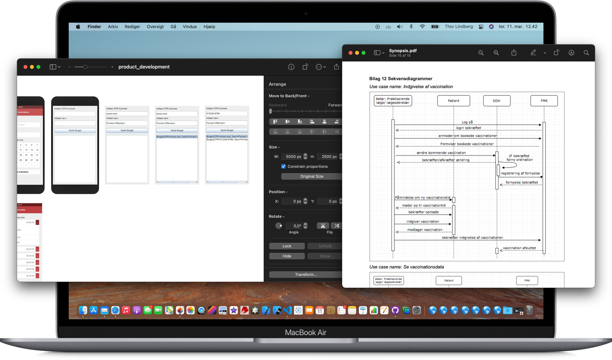
and user interfaces
System development and databases
at Copenhagen University
Faget giver introduktion til de elementære elementer i udviklingen af it-systemer i sundhedssystemet. Det indbefatter fra området systemudvikling: kravspecifikation, use cases, grundlæggende UML-diagrammer og systemudviklingsmetoder. Det indbefatter fra området Databaser: datamodellering og realisering af datamodel i en relationel database. Dertil kommer en introduktion til Data Definition Language (DDL) og Data Manipulation Language (DML). Der gives også en introduktion til objektorienteret programmering med Java og til dataudveksling med XML.
Mobile application
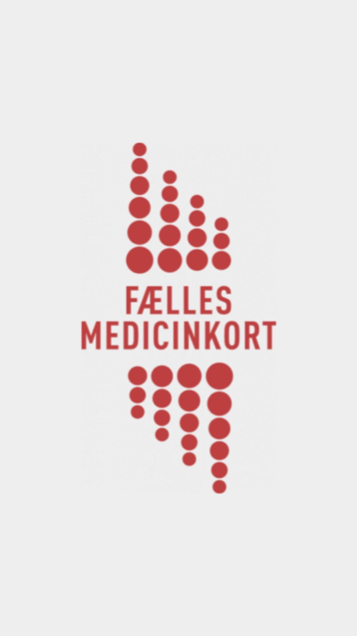
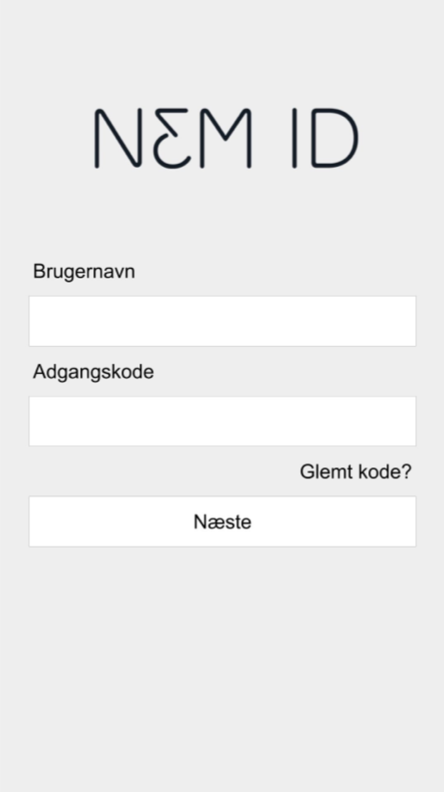
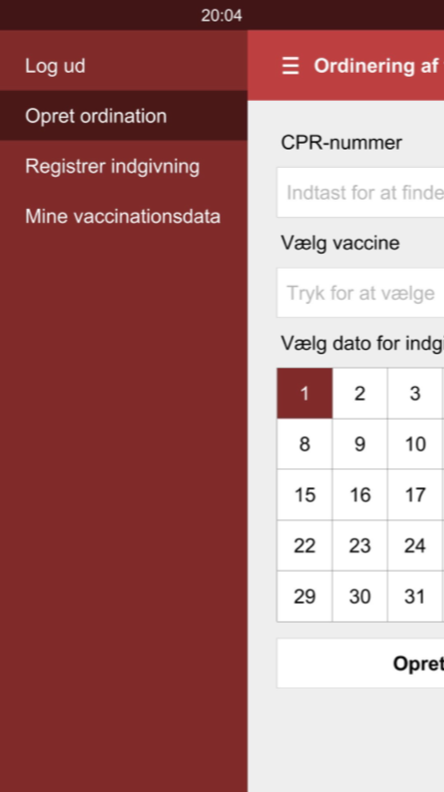
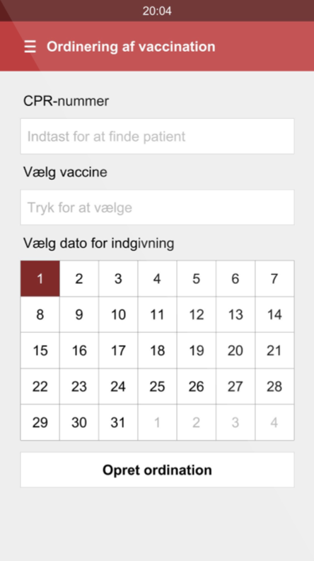
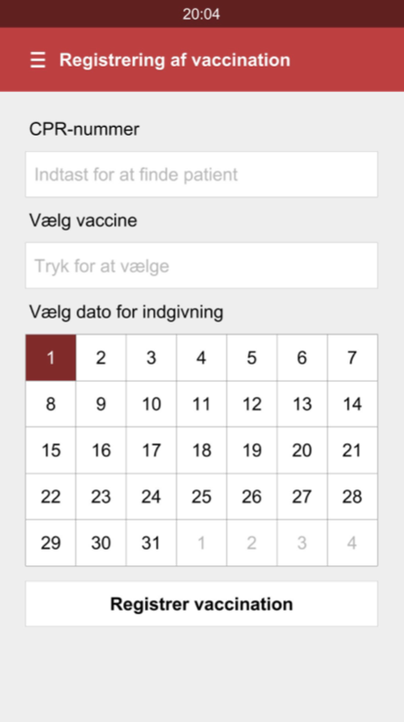
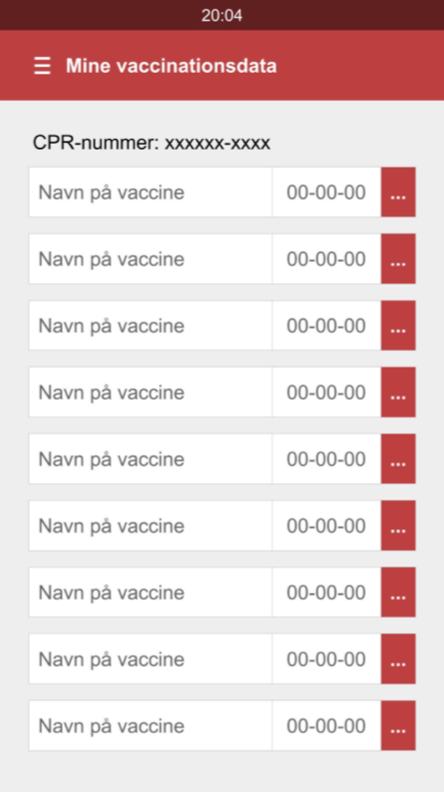
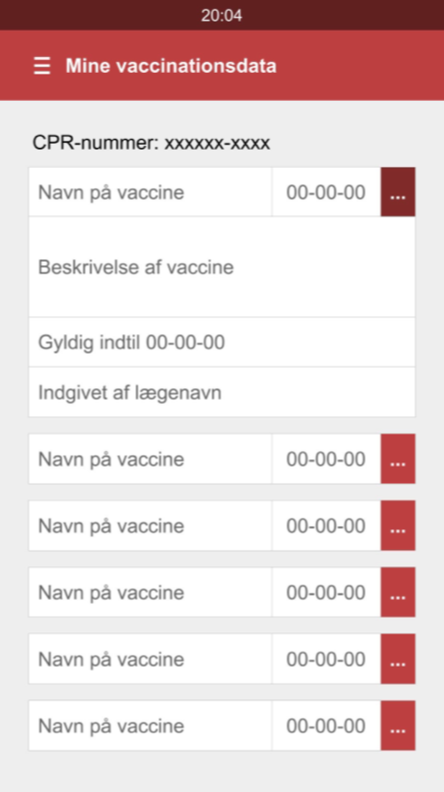


Desktop application
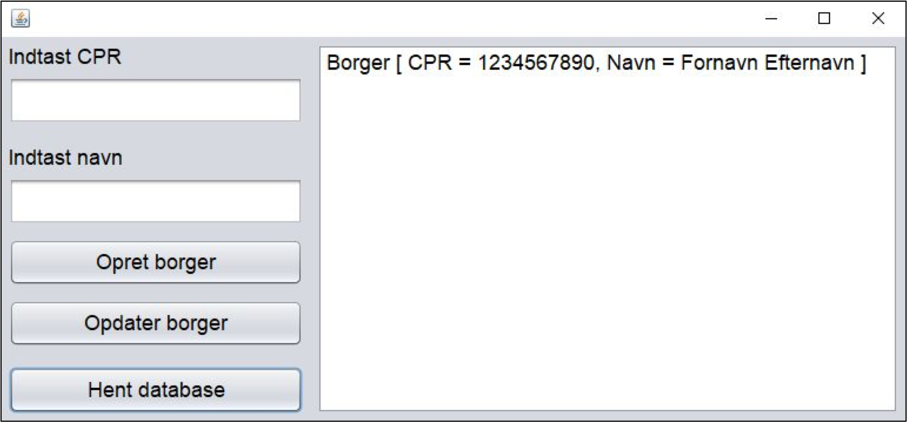
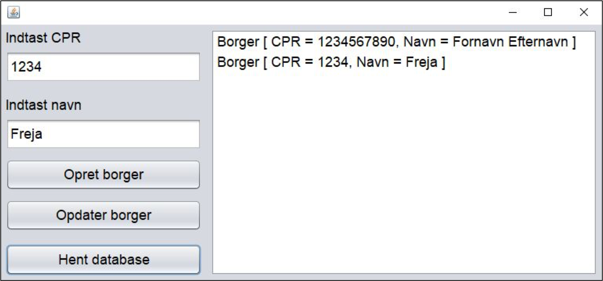
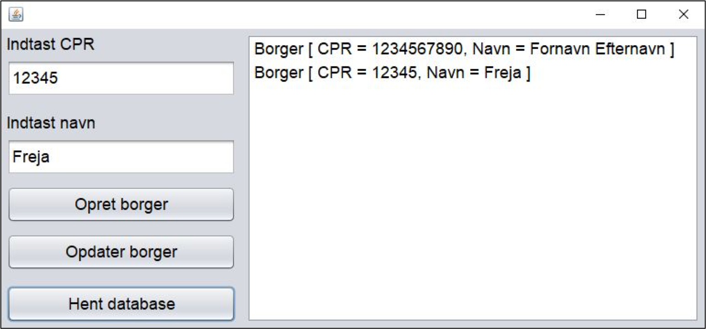
Development models
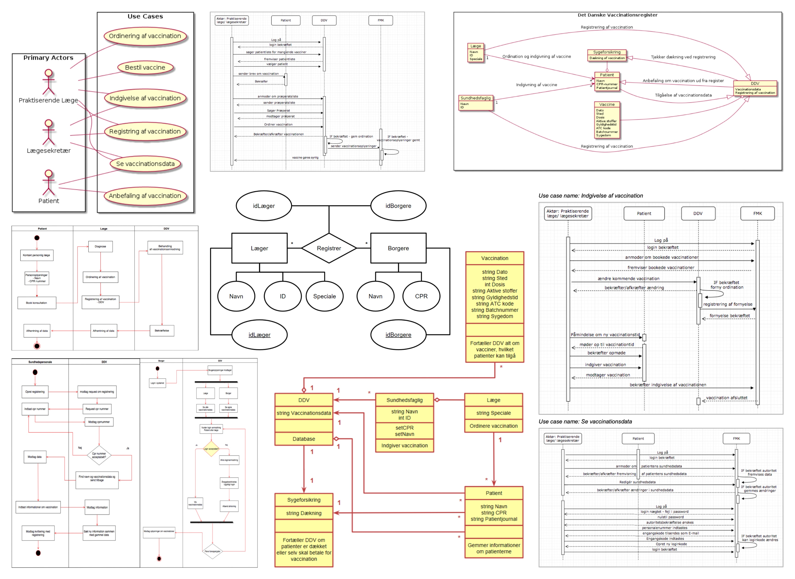
SQLite
database
Java code
Designing the right data,
for the right audience
Download Tableau workbooks
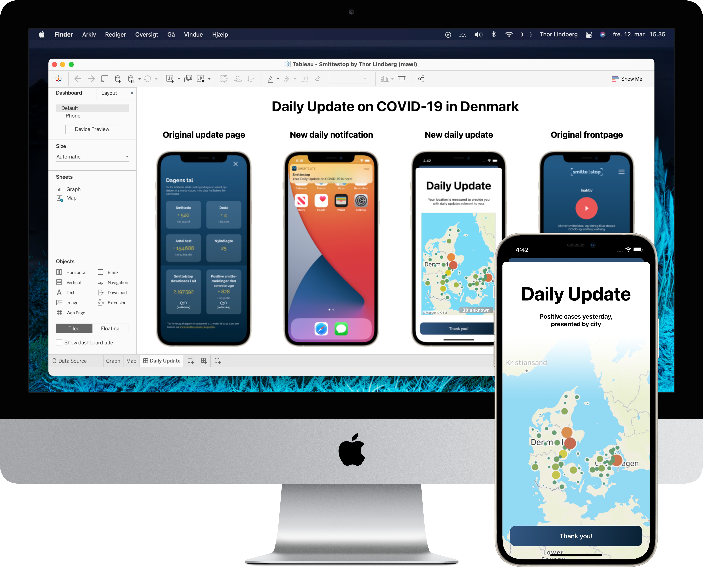
for the right audience
Data design
at IT-University in Copenhagen
Data visualizations are used to get fast insight into a topic, to create powerful narratives about data, make connections visible, and to explore, discover and persuade. Analyzing, designing, and curating information into useful communication, insight, and understanding have become essential in our digital society. Data design has become a key component in how we understand our world. For digital design, data visualizations and data-driven design have become essential, but this has consequences. In this course, the students will learn how to conceptualize, visualize and present data but also to understand the consequences of data visualizations. The course encompasses data design as a circular process which moves between a) tools and methods to visualize data, b) the conceptualization of data and data visualization, c) application of data visualization and interpretation, and d) addressing its consequences. By understanding data design as a socio-technical process, the students will critically dissect data visualizations to explore their inherent social, ethical and cultural consequences.
Tableau
Mini-project 1
Project briefing
Design and deliver a simple, explorative visualisation based on the Træer, basisregister ("Trees, basic registry") dataset, provided by Copenhagen Municipality and available as a CSV file. You may create a more detailed design brief to guide your work, but you do not need to hand it in.
Visualization explanation
Mapping trees onto a projection of the city of Copenhagen, allows us to visualize their geographic locations relative to the layout of the city. Annotating the mapped trees with a color for each type of location, emphasizes the relative presence and grouping of types of locations. This is especially interesting, as a relatively large amount of trees are non-registered, and of these non-registered trees, many are in close geographic proximity.
Design and deliver a simple, explorative visualisation based on the Træer, basisregister ("Trees, basic registry") dataset, provided by Copenhagen Municipality and available as a CSV file. You may create a more detailed design brief to guide your work, but you do not need to hand it in.
Visualization explanation
Mapping trees onto a projection of the city of Copenhagen, allows us to visualize their geographic locations relative to the layout of the city. Annotating the mapped trees with a color for each type of location, emphasizes the relative presence and grouping of types of locations. This is especially interesting, as a relatively large amount of trees are non-registered, and of these non-registered trees, many are in close geographic proximity.
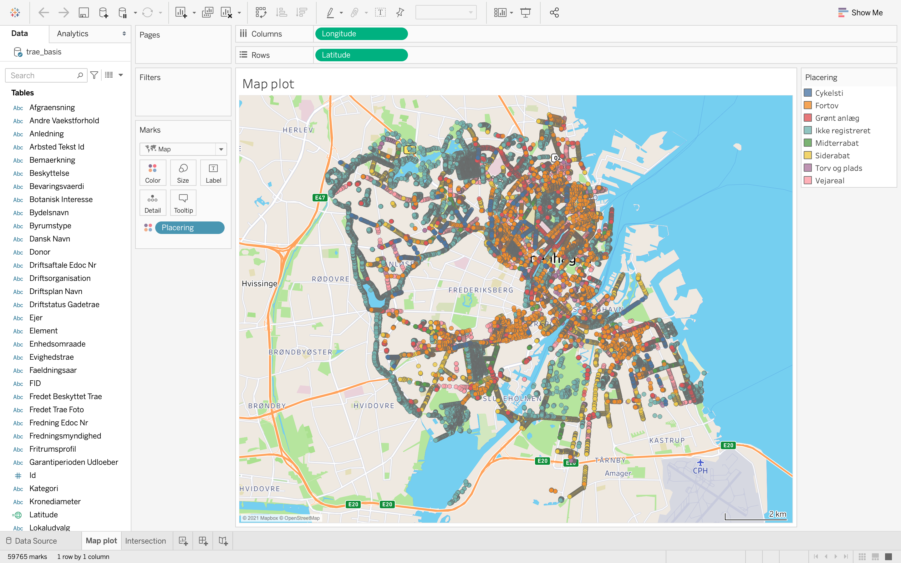
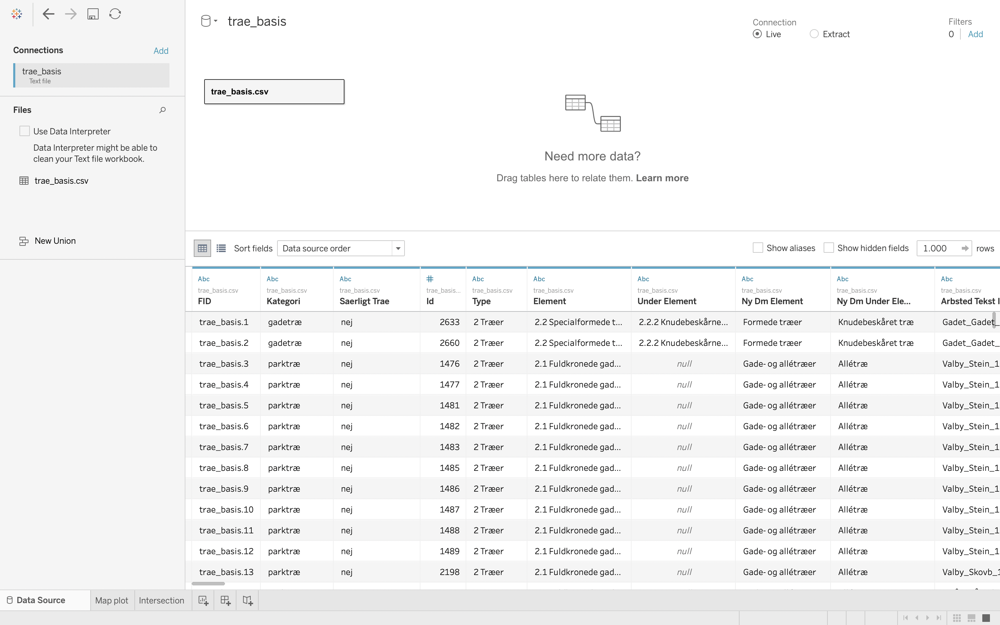
Tableau
Mini-project 2
Project briefing
"While over 2 million people have downloaded the official Danish COVID-19 contact tracing app smitte|stop, people struggle with prolonged social distancing. The app developers think that a redesign of the app might help to put an end to this menace. They ask for your help.
Using COVID-19 data from Statens Serums Institute (variable names in the CSV files are in Danish, co-operate with your semester team or use Google Translate), re-design smitte|stop by introducing one or more data visualization elements to it's frontpage and/or to first subpage titled Daily Update. Alternatively you can design an on-screen notification with a relevant data visualization."
Redesign explanation
The current Daily Update page, accessible through the Smittestop application's frontpage, fails to present information that is geographically relevant to its users. Instead, the current Daily Update page presents the sum of all positive COVID-19 cases across Denmark. To correct this shortcoming, I proposed presenting positive COVID-19 cases by municipality mapped onto a Mercator projection of Denmark.
This redesign is expected to motivate users to socially distance, even when the positive cases rapidly decrease in their local area. This is achieved by presenting the mapped data as annotations scaled and colored by their relative case count. Presenting municipality cases in this way emphasises the threat of COVID-19 not only in the local area, but also in surrounding municipalities.
"While over 2 million people have downloaded the official Danish COVID-19 contact tracing app smitte|stop, people struggle with prolonged social distancing. The app developers think that a redesign of the app might help to put an end to this menace. They ask for your help.
Using COVID-19 data from Statens Serums Institute (variable names in the CSV files are in Danish, co-operate with your semester team or use Google Translate), re-design smitte|stop by introducing one or more data visualization elements to it's frontpage and/or to first subpage titled Daily Update. Alternatively you can design an on-screen notification with a relevant data visualization."
Redesign explanation
The current Daily Update page, accessible through the Smittestop application's frontpage, fails to present information that is geographically relevant to its users. Instead, the current Daily Update page presents the sum of all positive COVID-19 cases across Denmark. To correct this shortcoming, I proposed presenting positive COVID-19 cases by municipality mapped onto a Mercator projection of Denmark.
This redesign is expected to motivate users to socially distance, even when the positive cases rapidly decrease in their local area. This is achieved by presenting the mapped data as annotations scaled and colored by their relative case count. Presenting municipality cases in this way emphasises the threat of COVID-19 not only in the local area, but also in surrounding municipalities.
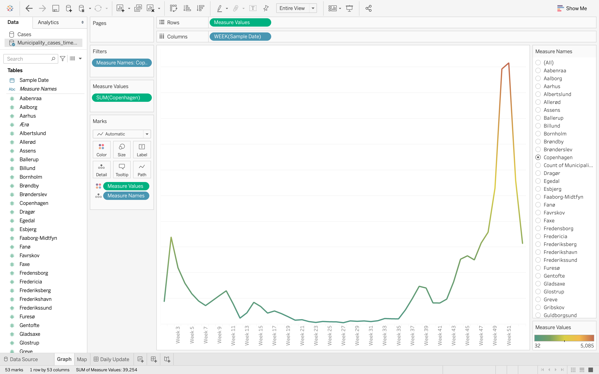
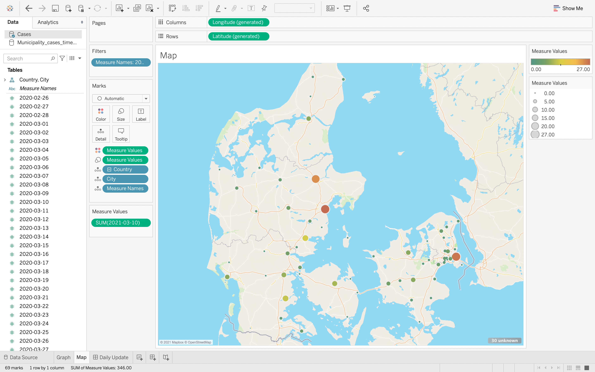
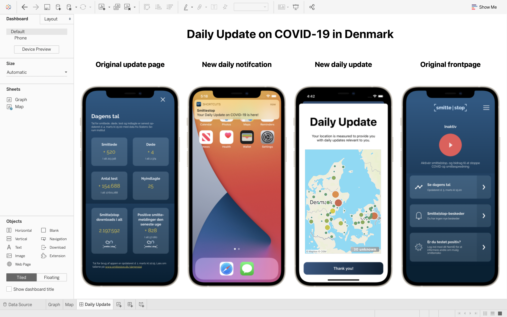

Mini-project 2
datasets
Designing for innovation,
in an established business
in an established business

Designdriven Innovation
at IT-University in Copenhagen
Kurset tager udgangspunkt i en historisk og kontekstuel tilgang til begrebet innovation. Herfra vil studerende blive præsenteret for en række teorier og metoder omkring innovation, design drevet innovation og designprocesser. Fagets teoretiske pensum bliver introduceret parallelt med et selvstændigt samarbejde med en case partner. Dette arbejde handler i høj grad om evnen til at kunne afgrænse området – og involvere relevante aktører. Her vil det være relevant at udføre interessent- og konkurrenceanalyser, udvikle forretningsmodeller, planlægge og udføre bruger/ekspert-centreret designaktiviteter.
Gennem forløbet skal der designes et digitalt produkt eller service. Dette produkt eller service skal rammesættes og formidles rettet mod potentielle aftagere. Dette vil sige, at studerende skal redegøre for, hvorledes deres arbejde i forløbet potentielt har værdi og en plads i et marked.
Gennem forløbet skal der designes et digitalt produkt eller service. Dette produkt eller service skal rammesættes og formidles rettet mod potentielle aftagere. Dette vil sige, at studerende skal redegøre for, hvorledes deres arbejde i forløbet potentielt har værdi og en plads i et marked.
Affinitydiagramming
of data and research